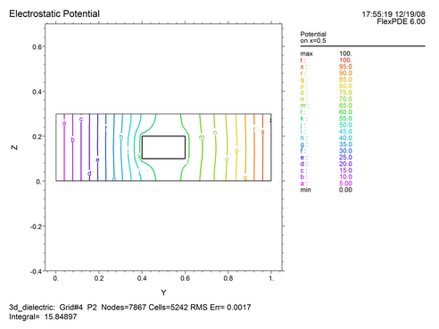

|
Electrostatics in 3D |

  
|
|
Electrostatics in 3D |
|
We can convert this example quite simply to a three dimensional calculation. The modifications that must be made are:
| • | Specify cartesian3 coordinates. |
| • | Add an extrusion section listing the dividing surfaces. |
| • | Provide boundary conditions for the end faces. |
| • | Qualify plot commands with the cut plane in which the plot is to be computed. |
In the following descriptor, we have divided the extrusion into three layers. The dielectric constant in the first and third layer are left at the default of k=1, while layer 2 is given a dielectric constant of 50 in the dielectric region only.
A contour plot of the potential in the plane x=0 has been added, to show the resulting vertical cross section. The plots in the z=0.15 plane reproduce the plots shown above for the 2D case.
Modifications to the 2D descriptor are shown in red.
See also"Samples | Applications | Electricity | 3D_Dielectric.pde"
Descriptor 1.2: 3D Dielectric.pde
title
'Electrostatic Potential'
coordinates
cartesian3
variables
V
definitions
eps = 1
equations
div(eps*grad(V)) = 0
extrusion
surface "bottom" z=0
surface "dielectric_bottom" z=0.1
layer "dielectric"
surface "dielectric_top" z=0.2
surface "top" z=0.3
boundaries
surface "bottom" natural(V)=0
surface "top" natural(V)=0
region 1
start (0,0)
value(V) = 0 line to (1,0)
natural(V) = 0 line to (1,1)
value(V) = 100 line to (0,1)
natural(V) = 0 line to close
region 2
layer "dielectric" eps = 50
start (0.4,0.4)
line to (0.8,0.4) to (0.8,0.8)
to (0.6,0.8) to (0.6,0.6)
to (0.4,0.6) to close
monitors
contour(V) on z=0.15 as 'Potential'
plots
contour(V) on z=0.15 as 'Potential'
vector(-dx(V),-dy(V)) on z=0.15 as 'Electric Field'
contour(V) on x=0.5 as 'Potential'
end
The following potential plot on x=0 shows the vertical cross section of the extruded domain. Notice that the potential pattern is not symmetric, due to the influence of the extended leg of the dielectric in the y direction.

Page url: index.html?electrostatics_in_3d.html